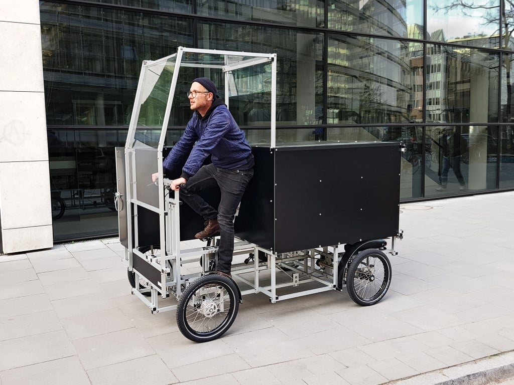
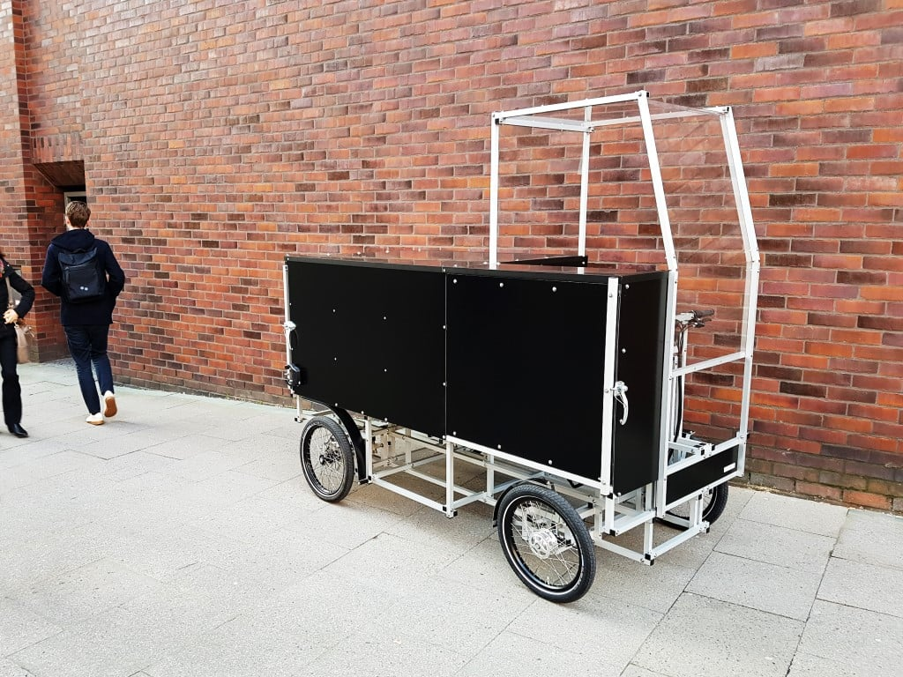
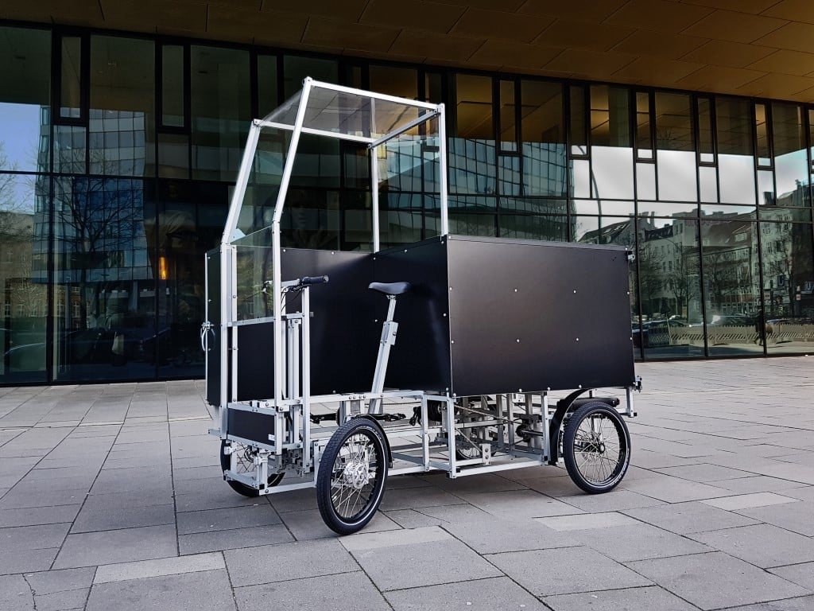
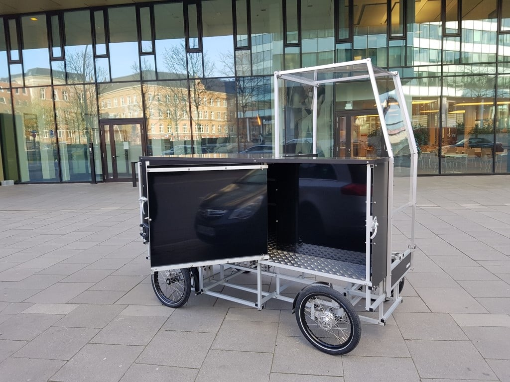
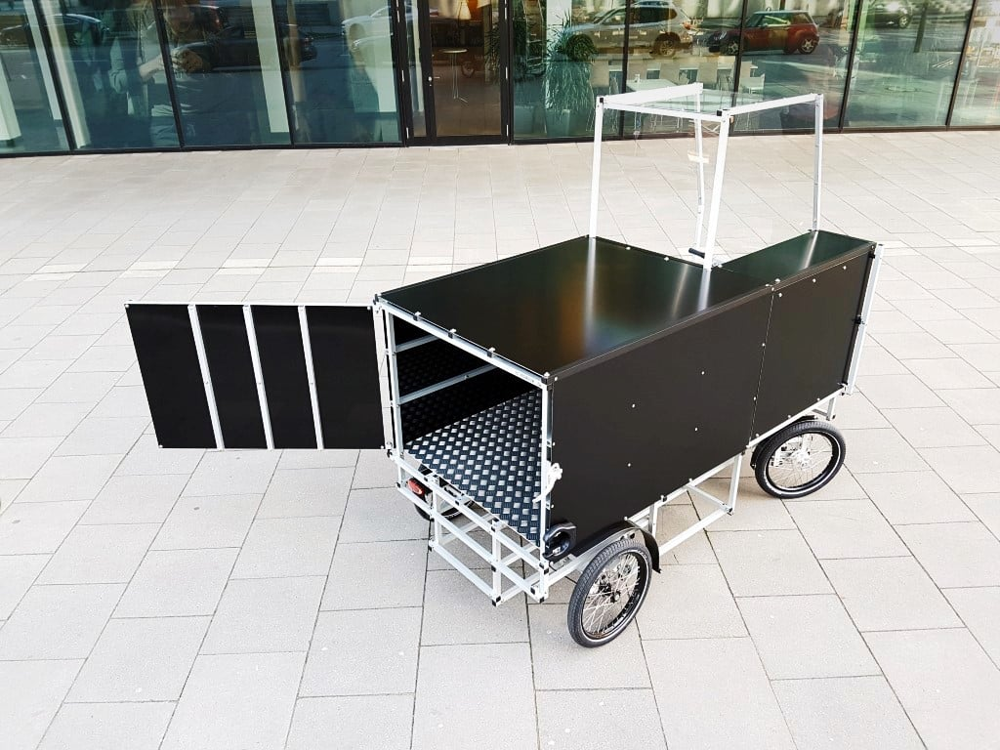
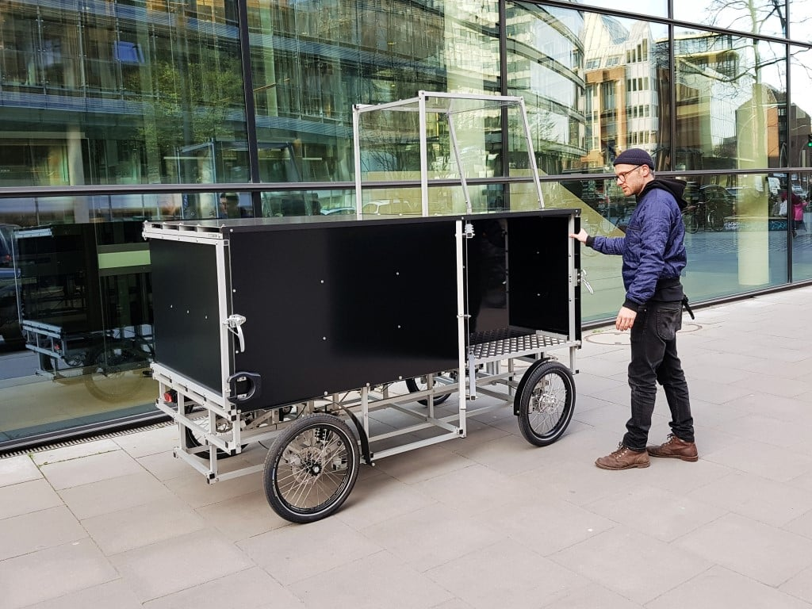
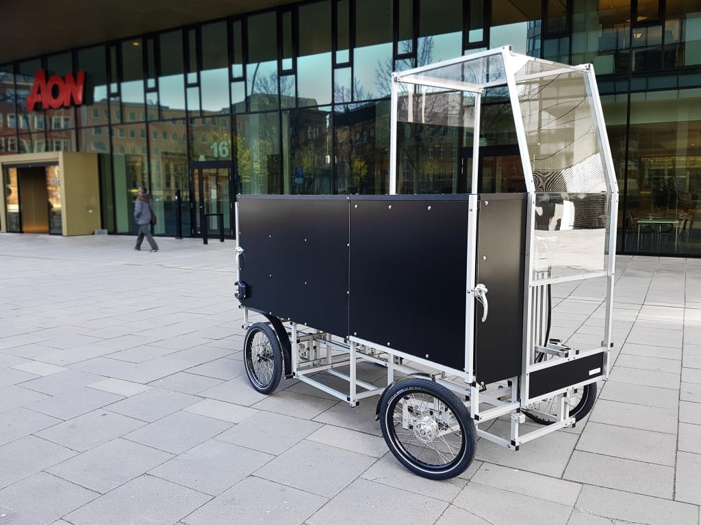

trucks
^ Projects infobox ^^
| image | 79637905 1741854995951168 1612862268070952960 o.jpg |
| designers | |
| date | |
| vitamins | |
| materials | |
| transformations | |
| lifecycles | |
| tools | [[wrenches|Wrenches]] |
| parts | [[frames|Frames]], [[nuts|Nuts]], [[bolts|Bolts]], [[end_caps|End caps]], [[wheels|Wheels]], [[hydraulic_pumps|Hydraulic pumps]], [[hydraulic_motors|Hydraulic motors]], [[hydraulic_hoses|Hydraulic hoses]], [[hydraulic_pistons|Hydraulic pistons]] |
| techniques | [[bolting|Bolting]], [[tri_joints|Tri joints]], [[shelf_joints|Shelf joints]], [[wheels_and_axles|Wheels and axles]], [[independent_suspensions|Independent suspensions]], [[dependent_suspensions|Dependent suspensions]] |
| files | |
| suppliers | |
| git | |
Introduction
A truck or lorry is a motor vehicle designed to transport cargo, carry specialized payloads, or perform other utilitarian work. Trucks vary greatly in size, power, and configuration. Smaller varieties may be mechanically similar to some automobiles. Commercial trucks can be very large and powerful and may be configured to be mounted with specialized equipment, such as in the case of refuse trucks, fire trucks, concrete mixers, and suction excavators. In American English, a commercial vehicle without a trailer or other articulation is formally a "straight truck" while one designed specifically to pull a trailer is not a truck but a "tractor".
Inspiration







<youtube>GFBxCS08OgI</youtube>
<youtube>j7pFxgDmZXQ</youtube>
Challenges
Approaches
- Amazon: RIGID HITCH INCORPORATED Square Stock - Trailer Axle Spindle for 1-3/8 Inch to 1-1/16 Inch I.D Bearings
- Amazon: 2-Pk Trailer Tire On Rim ST205/75D15 F78 205/75 LRC 5 Lug White Spoke Wheel
- Amazon: Tie Down Engineering 82113 10" Integral Style Vented Rotor Disc Brake Kit
Development Targets
<youtube>DAe8jKIQjT8</youtube>